Настройка растянутого кластера (stretch-cluster) на Windows server 2016
В данной статье мы рассмотрим как настроить отказоустойчивый растянутый кластер на базе Windows Server 2016.
В нашем сценарии кластер будет растянут между двумя дата центрами, при этом между хранилищами с помощью технологии storage replica будет настроена репликация данных.
Предположим у нас есть 2 сайта, в одном ДЦ у нас будет 2-е активные ноды кластера, в другом 2-е запасные, на случай отказа основного ДЦ.
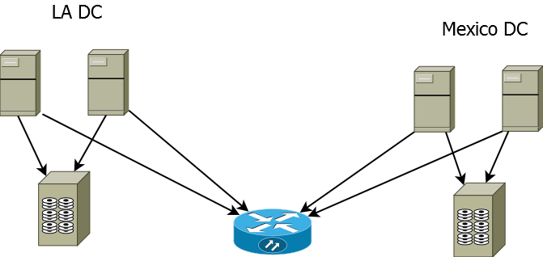
Перед настройкой серверов убедимся что мы соблюдаем следующие условия:
Используется лес доменных служб Active Directory (использовать Windows Server2016 не обязательно).
Есть минимум два сервера с установленным выпуском Windows Server2016 Datacenter.
Имеется два набора общего хранилища, использующие SAS JBOD , сеть SAN стандарта Fibre Channel, общие VHDX-файлы или цель iSCSI.
Хранилище должно содержать жесткий диск и твердотельный накопитель, а также поддерживать постоянное резервирование.
Доступ к каждому набору хранилищ нужно предоставить только для двух серверов (асимметричная конфигурация).
Каждый набор хранилищ должен допускать создание по меньшей мере двух виртуальных дисков: один для реплицируемых данных и один для журналов.
На всех дисках данных в физическом хранилище необходимо использовать одинаковый размер секторов. На всех дисках с журналами в физическом хранилище необходимо использовать одинаковый размер секторов.
На каждом сервере должно быть создано по меньшей мере одно подключение 1Гбит Ethernet для синхронной репликации, но желательно использовать RDMA.
Правила всех задействованных брандмауэров и маршрутизаторов должны разрешать двунаправленный трафик ICMP, SMB (порт 445, а также 5445 для SMB Direct) и WS-MAN (порт 5985) между всеми узлами.
Сеть между серверами должна иметь достаточную пропускную способность для ваших рабочих нагрузок ввода-вывода, а средняя задержка приема-передачи должна составлять 5мс для синхронной репликации.
Для асинхронной репликации рекомендации по задержке приема и передачи отсутствуют.
При настройке я буду использовать следующие сервера расположенные в 2-х разных ДЦ (LA и Mexico)
Site Mexico:
m-srv-cl2
m-srv-cl1
Site LA:
l-srv-cl1
l-srv-cl2
Редакция Windows Server должна быть Datacenter Edition, если у вас редакция Standard выполните следующий Powershell скрипт:
|
1 2 3 4 5 6 7 |
$Servers = 'm-srv-cl2','m-srv-cl1','l-srv-cl1','l-srv-cl2' foreach($srv in $Servers){ Invoke-Command -ComputerName $srv -ScriptBlock { DISM /online /Set-Edition:ServerDatacenter /ProductKey:CB7KF-BWN84-R7R2Y-793K2-8XDDG /AcceptEula /Quiet} } |
Далее после установки правильной редакции , установите необходимые роли и фичи следующим скриптом:
|
1 2 3 |
$Servers = 'm-srv-cl2','m-srv-cl1','l-srv-cl1','l-srv-cl2' $Servers | foreach { Install-WindowsFeature -ComputerName $_ -Name Storage-Replica,Failover-Clustering,FS-FileServer -IncludeManagementTools -restart } |
После установки ролей Storage-Replica,Failover-Clustering,FS-FileServer перейдем к настройке дисков.
Подключите общее хранилище к каждому серверу внутри одного ДЦ
Соблюдайте следующие требования:
Необходимо создать два тома на каждой полке: один для данных и один для журналов.
Диски журналов и данных следует инициализировать как GPT, а не MBR.
Два тома данных должны иметь одинаковый размер.
Два тома журналов должны иметь одинаковый размер.
Все реплицируемые диски данных должны иметь одинаковый размер сектора.
Все диски журналов должны иметь одинаковый размер сектора.
Тома журналов должны использовать хранилище на базе флэш-памяти и параметры устойчивости, обеспечивающие высокую производительность.
Майкрософт рекомендует, чтобы хранилище журналов работало так же быстро или быстрее, чем хранилище данных.
Томы журнала никогда не должны использоваться для других задач.
В качестве дисков данных можно использовать жесткие диски, твердотельные накопители или их многоуровневое сочетание.
Диски можно организовать как зеркальные массивы, массивы с контролем четности, RAID1 или 10, RAID5 или RAID50.
Том журнала должен иметь размер по умолчанию не менее 9ГБ, но может отличаться как в большую, так и в меньшую сторону в зависимости от требований к ведению журнала.
Тома должны форматироваться с помощью файловой системы NTFS или ReFS.
Роль файлового сервера необходима только для работы Test-SRTopology, так как она открывает порты брандмауэра, необходимые для тестирования.
Для дисковых полок JBOD:
Убедитесь, что каждый набор узлов в парах серверов может видеть только дисковые полки своего сайта (асимметричное хранилище) и что подключения SAS правильно настроены.
Для хранилища iSCSI:
Убедитесь, что каждый набор узлов в парах серверов может видеть только дисковые полки своего сайта (асимметричное хранилище). При работе с iSCSI следует использовать несколько сетевых адаптеров.
Для хранилища Fibre Channel в сети SAN:
Убедитесь, что каждый набор узлов в парах серверов может видеть только дисковые полки своего сайта (асимметричное хранилище) и что правильно выбраны зоны узлов.
Подготовьте хранилище в соответствии с документацией поставщика.
Теперь зайдем на сервера в каждом ДЦ и по аналогии настроим общие диски, открываем консоль управления дисками и начинаем
Переводим диск в online
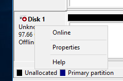
Инициализируем диск
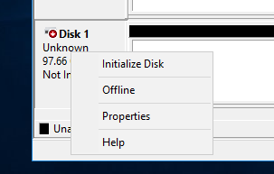
Инициализируем диск как GPT, это обязательное требование
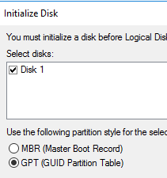
Создаем новый раздел
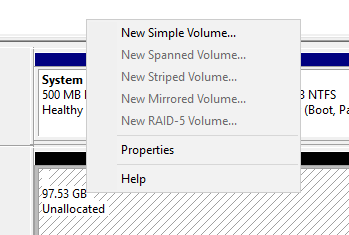
Не назначаем букву диску
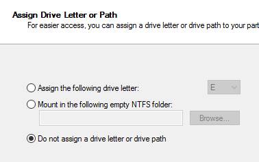
Форматируем диск в NTFS и задаем ему Label
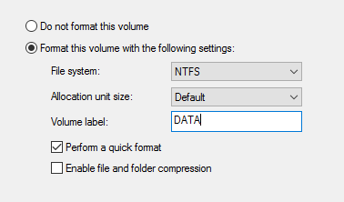
Проделываем тоже самое на втором диске для логов.
Запускаем консоль cluadmin.msc и создаем новый кластер
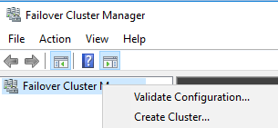
Добавляем наши узлы кластера
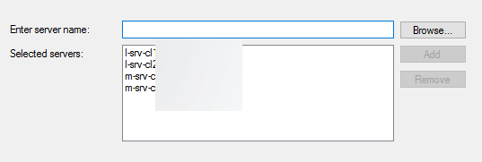
Запускаем тестирование кластера и дожидаемся окончания проверки
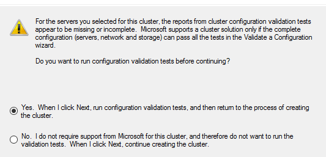
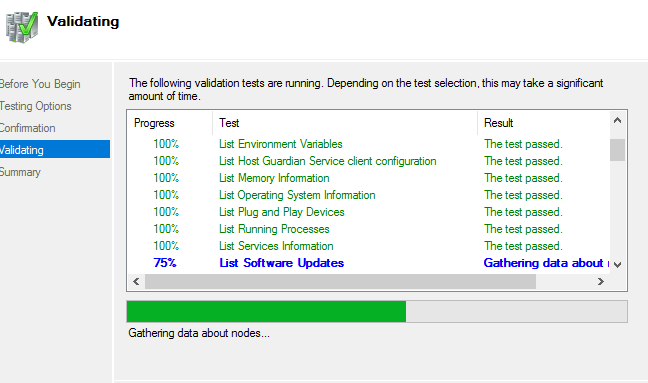
Вводим имя кластера и подключаем доступные хранилища
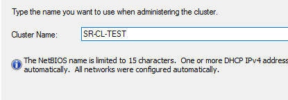
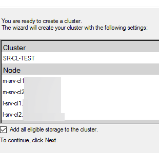
Перейдем к настройке кворума
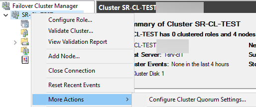
Выбираем quorum witness
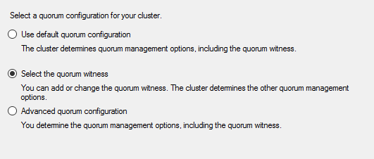
В качестве кворума будем использовать сетевую шару
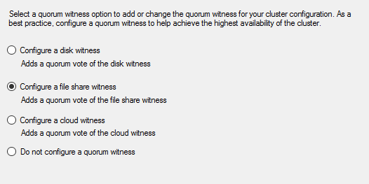
Далее просто укажите сетевой путь к шаре и завершите работу мастера.
Далее добавим все хранилища в наш кластер
|
1 2 3 4 5 6 7 |
$Servers = 'm-srv-cl2','m-srv-cl1','l-srv-cl1','l-srv-cl2' foreach($srv in $Servers){ Invoke-Command -ComputerName $srv -ScriptBlock { Get-ClusterAvailableDisk -All | Add-ClusterDisk} } |
Назначим кластерному диску DATA букву, делать это нужно через интерфейс failover cluster manager
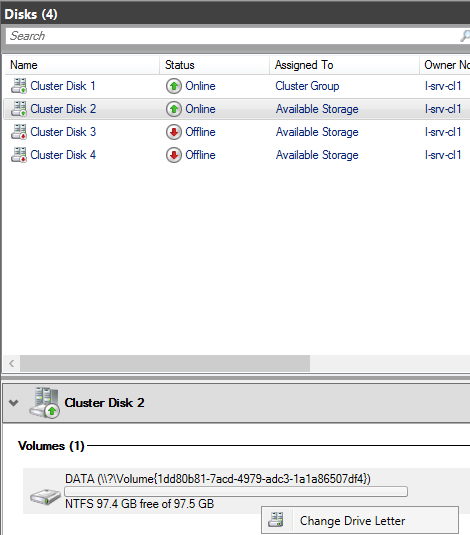
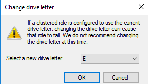
По аналогии назначаем букву для второго диска LOG
Теперь добавим роль файлового сервера на наш созданный кластер
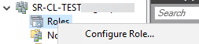
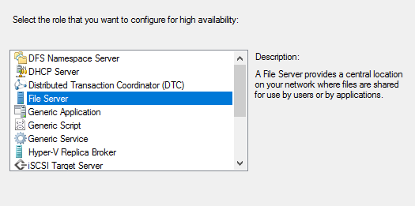
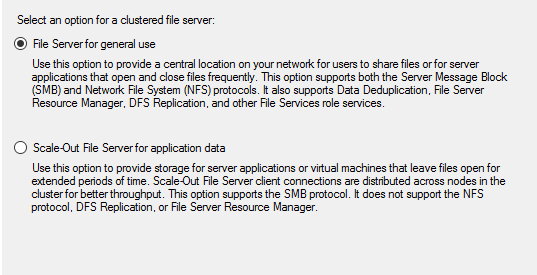
Вводим имя для кластерной роли
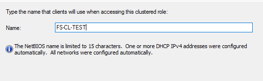
Назначим диск
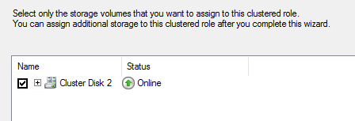
Убедитесь что роль успешно запустилась
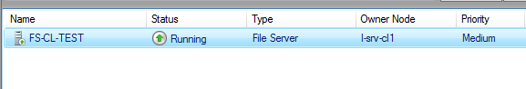
Теперь создадим сетевую шару на нашей кластерной роли
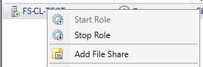
Для примера выберем quick
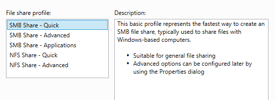
Выбираем диск и сервер
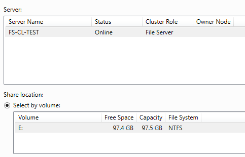
Вводим имя шары, обратите внимание что будет сразу показан сетевой путь
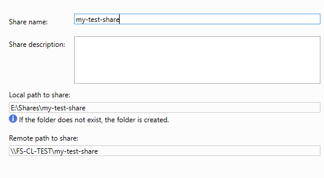
Далее выбираем дополнительные параметры для нашей шары
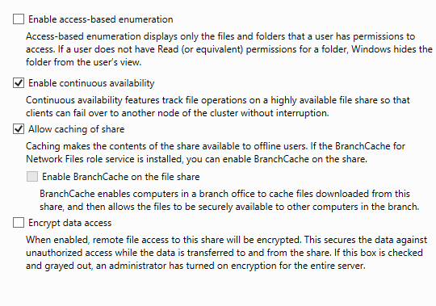
Пункт Access Based enumeration — означает что при включении этой опции шара будет видна только тем пользователям у которых есть на нее права, другие пользователи в списке шар ее не увидят.
Пункт Continuous availability позволяет клиентам продолжать работу с шарой в случае отказа одной из нод кластера, без разрыва соединения. Данный пункт особенно актуален для приложений которые могут использовать шару
Далее можно включить поддержку кэширования и поддержку шифрования сетевого трафика.
Обратите внимание что шифрование не поддерживают клиенты младше Windows 8.
Далее настройте необходимые вам права доступа и нажмите Create.
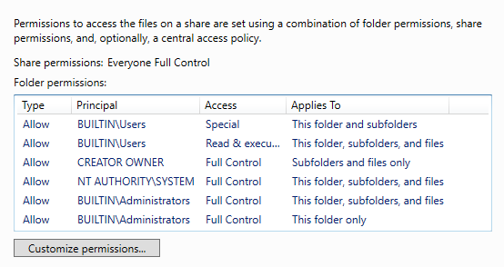
После того как мы успешно настроили сетевую шару на кластере, перейдем к настройки репликации хранилища.
Открываем диски, выбираем диск DATA и включаем Storage Replica
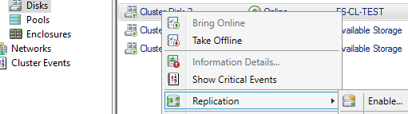
Указываем диск куда будут реплицироваться данные
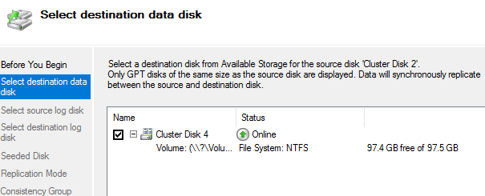
Выбираем диск для Source логов
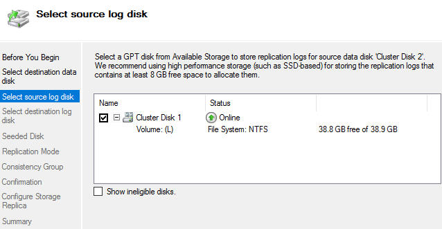
Теперь указываем диск для Destination логов
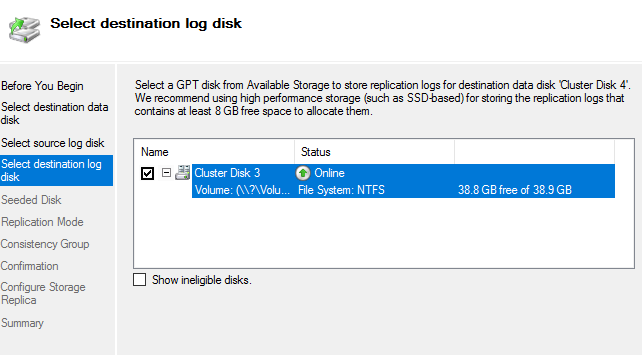
Указываем что содержимое Destination диска будет перезаписано
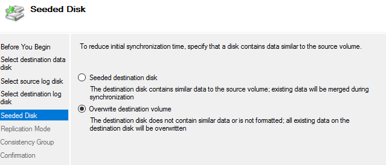
Далее выбираем тип репликации, синхронную или асинхронную.
При синхронной репликации данные считаются записанными только тогда когда все блоки записались на source и destination диски
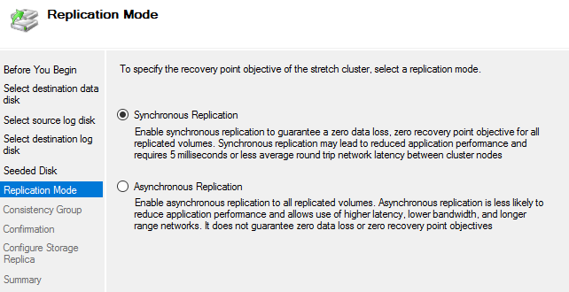
Далее указываем параметры консистентности групп
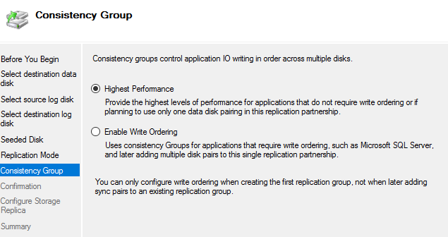
Если вы используете растянутый кластер для хранения файлов выбирайте первый пункт.
Далее дожидаемся завершения процесса конфигурирования репликации.
Теперь откройте диск DATA в диспетчере отказоустойчивых кластеров , выберите внизу вкладку replication и дождитесь завершения процесса копирования блоков данных
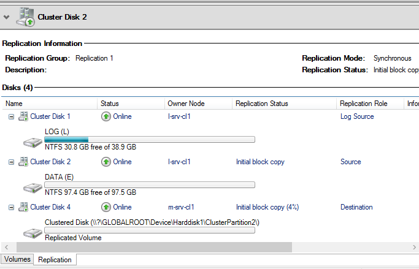
Дождитесь статуса Continuously replicating , это будет означать что репликация между хранилищами работает корректно
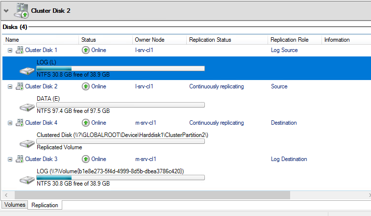
Теперь проверим как кластер обработает отказ одной из нод и полный отказ одного из ДЦ.
Запустим процесс копирования на созданную ранее сетевую шару \\fs-cl-test\my-test-share
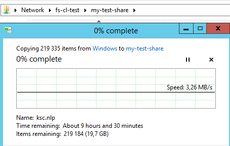
Теперь отключим активную ноду l-srv-cl2 (просто отключим у нее питание)
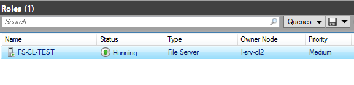
кластер начал активное переключение роли файлового сервера
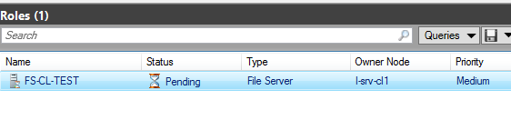
Роль корректно переключилась на сервер l-srv-cl1
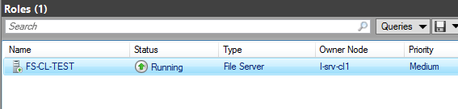
Процесс копирования файлов на сетевую шару при этом не прервался
(из-за того что на сетевой шаре активирована функция Continuous availability )
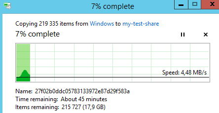
Теперь отключим по питанию ноду l-srv-cl1, которая осталась единственной живой нодой на сайте LA
Кластер начал процесс переключения роли на второй ДЦ Mexico
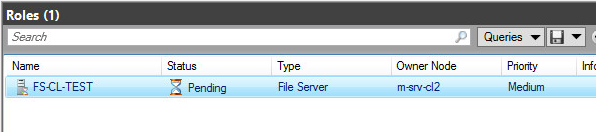
Кластер успешно переключил роль на второй ДЦ Mexico
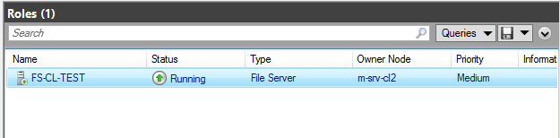
Обратите внимание что на момент переключения процесс копирования остановился, но не прервался
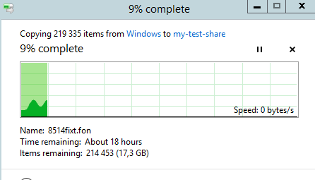
После завершения переключения и обновления записей в DNS, клиент на котором было запущено копирование успешно восстановит соединение и продолжит копирование
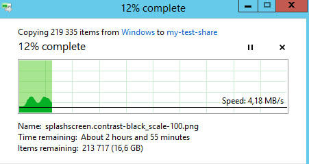
Теперь вернем в работу обратно две ранее выключенные ноды сайта LA
Перейдем в раздел Disks, выберем диск DATA и убедимся что начался процесс копирования данных с источника репликации

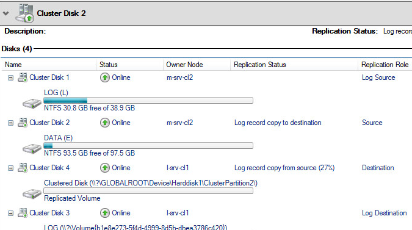
Дожидаемся статуса Continuously replicating, означающего что репликация между хранилищами восстановлена
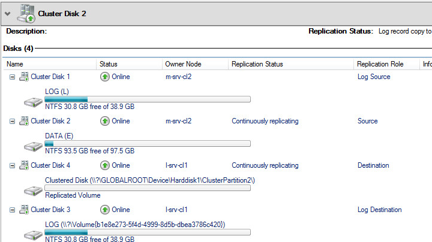
Таким образом мы успешно настроили отказоустойчивый растянутый кластер, который может пережить отказ одного ДЦ не прерывая при этом работу пользователей или приложений.
Добавить комментарий